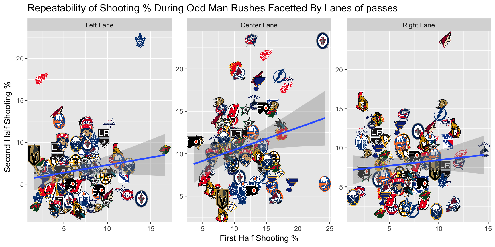

(TODO: Revise this part)
Have you ever wondered about the numbers behind offensive player advantage (odd man) rushes? Are the number of shots repeatable over an entire season? What about shooting percentages? If they are repeatable, do zones of the primary pass (a pass right before a shot) affect this repeatability? And what about rebounds and rebound shooting percentages (the goals scored off of rebounds)?
To investigate these questions, I will be using the Passing Project Data from the 2015-2016, 2016-2017, and 2017-2018 NHL seasons organized by Ryan Stimson and Corey Sznajder. The data was collected by a group of volunteers who tracked every pass leading to a shot. According to Ryan’s MIT Sloan Sports Analytics Conference paper, “Each tracker was required to complete 2 - 3 training games for validation by the project leader to ensure consistency in classification of passes and recording of data. Occasional spot-checking of games was also conducted.”
I would like to thank my mentor of the Hockey Graphs Mentorship Program, Sam Ventura, for his time and advice.
pass_final %>%
select(shot_on_goal, goal, odd_man, shot_type, a1_zone, rebound_shot_on_goal) %>%
head(10) %>%
kable() %>%
kable_styling(bootstrap_options = "striped")| shot_on_goal | goal | odd_man | shot_type | a1_zone | rebound_shot_on_goal |
|---|---|---|---|---|---|
| 1 | 0 | NA | W | nl | 0 |
| 0 | 0 | NA | W | of | 0 |
| 0 | 0 | NA | T | ol | 0 |
| 1 | 1 | NA | W | dsl | 0 |
| 0 | 0 | NA | S | or | 0 |
| 0 | 0 | NA | W | nc | 0 |
| 0 | 0 | 3-2 | T | ol | 0 |
| 0 | 0 | NA | T | ol | 0 |
| 1 | 0 | NA | W | dsl | 0 |
| 1 | 0 | NA | W | nl | 0 |
There are 45 variables and over 150,000 observations in this dataset. Some notable variables that I will be using for my analysis include shot_on_goal (1 for yes and 0 for no), goal (1 for yes and 0 for no), odd_man (number of players involved in player advantages during rushes), shooting_percentage (number of goals / number of shots on goals), shot_type (one-timer, slap shot, wrist/snap shot, backhand, etc), a1_zone (zone that the primary assist originated), and rebound_shot_on_goal (if a rebound occured and resulted in a shot on goal).
There are two analysis based upon this datset; Ryan Stimson’s paper discusses repeatability of certain metrics on a team level and player level. A NHL Numbers post covers repeatability of passes that crosses through the royal road (the line that goes directly through the middle of the ice from one net to the other) and provides visualizations.
In my blog post, I will look at repeatability of shots taken during rushes with player advantages, shooting percentages, rebound shots, and rebound shooting percentages in 5 on 5 situations.
This article is filled with scatterplots with linear regression lines. I’ve grouped the data by teams and plotted the first half statistics from the 2015-2016, 2016-2017, and 2017-2018 seasons on the x-axis, the second half statistics from the 2015-2016, 2016-2017, and 2017-2018 season the on the y-axis, and generated a smoothed line with a confidence band. It is a 95% confidence interval on the slope of the regression line.
In this analysis, I designated the midpoint of each of the three seasons as Jan 1st. All the games before that date are labelled as the first half of the season while the games after that date are labelled as the second half. In terms of the linear regression graphs, the x-variable is a statistic from the first half of the season and the y-variable is a statistic from the second half of the season. As a result, we are really examining the relationship between the past and future of a statistic, or the repeatability of a statistic.
First, let’s examine if shots taken in rushes with player advantages are repeatable.
pass_odd_man <- pass_final %>%
filter(strength == "5v5") %>%
# Further divide odd_man rushes by number of advantage in men
mutate(odd_man = ifelse(odd_man == "NA-NA", "non_odd_man",
ifelse(odd_man %in% c("1-0", "2-1", "3-2", "4-3"), "one_man",
ifelse(odd_man %in% c("2-0", "3-1", "4-2", "3-0"), "two_plus_man",
"NA")))) %>%
mutate(half = case_when(
date <= as.Date("2016-01-01") ~ "first",
date > as.Date("2016-01-01") & date < as.Date("2016-07-01") ~ "second",
date >= as.Date("2016-10-01") & date <= as.Date("2017-01-01") ~ "first",
date > as.Date("2017-01-01") & date < as.Date("2017-07-01") ~ "second",
date >= as.Date("2017-10-01") & date <= as.Date("2018-01-01") ~ "first",
date > as.Date("2018-01-01") & date <= as.Date("2018-07-01") ~ "second"
)) %>%
group_by(team, season, half, odd_man) %>%
# Get total number of shots for each team, half, odd man situation
summarise(shots = n()) %>%
filter(!is.na(team), !is.na(half)) %>%
spread(key = half, value = shots, fill = 0) %>%
ungroup() %>%
filter(odd_man != "NA")### Note:At this point, I realized that the number of rows of teams did not match the number of rows of urls of team logos, so I decided to create a function
# Create a function to match number of rows of team logos urls to number of rows for each team
match_logo <- function(df) {
# Configure team logos to match values in odd_man
team_freq <- as.data.frame(table(df[["team"]]))
empty_list <- list()
for (ii in seq(nrow(team_freq))) {
empty_list[[ii]]<- rep(team_logo[ii], times = team_freq[,2][ii])
}
return(as.vector(unlist(empty_list)))
}# Let's add on team logo urls to pass_odd_man
pass_odd_man <- pass_odd_man %>%
mutate(team_logo_url = match_logo(pass_odd_man))
# Let's change the labels on the facets:
odd_man <- list(
"non_odd_man" = "No player advantage",
"one_man" = "One player advantage",
"two_plus_man" = "Two+ player advantage"
)
odd_man_labeller <- function(variable,value){
return(odd_man[value])
}
# Plot
ggplot(pass_odd_man, aes(x = first, y = second)) +
geom_image(aes(image = team_logo_url), size = 0.08) +
geom_smooth(method = "lm") +
facet_wrap(~odd_man, scales = "free", labeller = odd_man_labeller) +
coord_fixed() +
labs(x = "First Half Shots",
y = "Second Half Shots") +
ggtitle("Repeatability of Total Shots Facetted by Odd Man Rushes") Let’s examine shooting percentages and see if we can detect the same trend.
pass_shooting_percentage <- pass_final %>%
filter(strength == "5v5") %>%
mutate(odd_man = ifelse(odd_man == "NA-NA", "non_odd_man",
ifelse(odd_man %in% c("1-0", "2-1", "3-2", "4-3"), "one_man",
ifelse(odd_man %in% c("2-0", "3-1", "4-2", "3-0"), "two_plus_man",
"NA")))) %>%
mutate(half = case_when(
date <= as.Date("2016-01-01") ~ "first",
date > as.Date("2016-01-01") & date < as.Date("2016-07-01") ~ "second",
date >= as.Date("2016-10-01") & date <= as.Date("2017-01-01") ~ "first",
date > as.Date("2017-01-01") & date < as.Date("2017-07-01") ~ "second",
date >= as.Date("2017-10-01") & date <= as.Date("2018-01-01") ~ "first",
date > as.Date("2018-01-01") & date <= as.Date("2018-07-01") ~ "second"
)) %>%
group_by(team, season, half, odd_man) %>%
# Calculate the shooting percentage, defined as the number of goals over the number of shots on goal
summarise(shooting_percentage = 100 * (sum(goal) / sum(shot_on_goal))) %>%
filter(!is.na(team), !is.na(half)) %>%
spread(key = half, value = shooting_percentage) %>%
ungroup() %>%
mutate(team_logo_url = match_logo(.))
# Ignore two_plus_man
pass_shooting_percentage %>%
filter(odd_man != "two_plus_man", odd_man != "NA") %>%
ggplot(aes(x = first, y = second)) +
geom_image(aes(image = team_logo_url), size = 0.06)+
geom_smooth(method = "lm") +
facet_wrap(~odd_man, scales = "free", labeller = odd_man_labeller) +
coord_fixed() +
labs(x = "First Half Shooting %",
y = "Second Half Shooting %") +
ggtitle("Repeatability of Shooting % Facetted by Odd Man Rushes")Now, I observe the repeatability of shooting percentages facetted by the zone the primary pass (the pass right before the shot) originated from.
pass_shooting_percentage_zone <- pass_final %>%
filter(strength == "5v5") %>%
mutate(half = case_when(
date <= as.Date("2016-01-01") ~ "first",
date > as.Date("2016-01-01") & date < as.Date("2016-07-01") ~ "second",
date >= as.Date("2016-10-01") & date <= as.Date("2017-01-01") ~ "first",
date > as.Date("2017-01-01") & date < as.Date("2017-07-01") ~ "second",
date >= as.Date("2017-10-01") & date <= as.Date("2018-01-01") ~ "first",
date > as.Date("2018-01-01") & date <= as.Date("2018-07-01") ~ "second"
)) %>%
# Extract out the last letter in a1_zone, which shows the lane in which the pass originiates from
mutate(a1_zone = substr(a1_zone, start = nchar(a1_zone), stop = nchar(a1_zone)),
a1_zone = tolower(a1_zone),
a1_zone = ifelse(a1_zone == "c", "center_lane",
ifelse(a1_zone == "f", "faceoff",
ifelse(a1_zone == "l", "left_lane",
ifelse(a1_zone == "p", "point",
ifelse(a1_zone == "r", "right_lane", NA)))))) %>%
group_by(team, season, half, a1_zone) %>%
summarise(shooting_percentage = 100 * (sum(goal) / sum(shot_on_goal))) %>%
filter(!is.na(team), !is.na(half), !is.na(a1_zone), !is.na(shooting_percentage)) %>%
spread(key = half, value = shooting_percentage) %>%
ungroup() %>%
mutate(team_logo_url = match_logo(.)) %>%
# Filter out 0% and 100% shooting percentages, which makes no sense.
filter(!(first %in% c(0, 100)), !(second %in% c(0, 100)))
# Let's change the labels on the facets:
pass_lanes <- list(
"left_lane" = "Left Lane",
"faceoff" = "Faceoff",
"center_lane" = "Center Lane",
"point" = "passes back to the point",
"right_lane" = "Right Lane",
"not_categorized" = "None"
)
pass_lanes_labeller <- function(variable,value){
return(pass_lanes[value])
}
# Change order of facets
pass_shooting_percentage_zone$a1_zone <- factor(pass_shooting_percentage_zone$a1_zone,
levels = c("left_lane",
"faceoff",
"center_lane",
"point",
"right_lane"))
# Plot
pass_shooting_percentage_zone %>%
filter(a1_zone %in% c("left_lane", "center_lane", "right_lane")) %>%
ggplot(aes(x = first, y = second)) +
geom_image(aes(image = team_logo_url), size = 0.09)+
geom_smooth(method = "lm") +
facet_wrap(~a1_zone, scales = "free", labeller = pass_lanes_labeller) +
labs(x = "First Half Shooting %",
y = "Second Half Shooting %") +
ggtitle("Repeatability of Shooting % During Odd Man Rushes Facetted By Lanes of passes")
The center lane facet shows no repeatability between first half shooting percentage and second half shooting percentage, but is the closest out of all three graphs to being repeatable.
None of these graphs show any signs of repeatability since I can draw a horizontal line through all these graphs.
As a result, the lane of a primary pass does not help explain the discrepancy in repeatability of shooting percentages in odd man rushes.
During the course of a game, there is bound to be a rebound. Most “trash” goals scored in the “dirty” areas are scored off of a rebound. Let’s examine the repeatability of rebound shots over a season.
pass_final %>%
filter(strength == "5v5") %>%
mutate(half = case_when(
date <= as.Date("2016-01-01") ~ "first",
date > as.Date("2016-01-01") & date < as.Date("2016-07-01") ~ "second",
date >= as.Date("2016-10-01") & date <= as.Date("2017-01-01") ~ "first",
date > as.Date("2017-01-01") & date < as.Date("2017-07-01") ~ "second",
date >= as.Date("2017-10-01") & date <= as.Date("2018-01-01") ~ "first",
date > as.Date("2018-01-01") & date <= as.Date("2018-07-01") ~ "second"
)) %>%
group_by(team, season, half) %>%
summarise(rebound_shot_per_game = sum(rebound_shot_on_goal) / length(unique(date))) %>%
filter(!is.na(team), !is.na(half)) %>%
spread(key = half, value = rebound_shot_per_game) %>%
ungroup() %>%
mutate(team_logo_url = match_logo(.)) %>%
ggplot(aes(x = first, y = second)) +
geom_image(aes(image = team_logo_url), size = 0.04, by = "height") +
geom_smooth(method = "lm") +
labs(x = "First Half Rebound Shots",
y = "Second Half Rebound Shots") +
ggtitle("Repeatability of Rebound Shots")To dig deeper into the effectiveness of rebounds in offensive situations, I’ve defined rebound shooting percentage as the percentage of rebound goals scored. Let’s now examine its repeatability.
pass_final %>%
filter(strength == "5v5") %>%
mutate(half = case_when(
date <= as.Date("2016-01-01") ~ "first",
date > as.Date("2016-01-01") & date < as.Date("2016-07-01") ~ "second",
date >= as.Date("2016-10-01") & date <= as.Date("2017-01-01") ~ "first",
date > as.Date("2017-01-01") & date < as.Date("2017-07-01") ~ "second",
date >= as.Date("2017-10-01") & date <= as.Date("2018-01-01") ~ "first",
date > as.Date("2018-01-01") & date <= as.Date("2018-07-01") ~ "second"
)) %>%
group_by(team, season, half) %>%
summarise(rebound_percentage = 100 * (sum(rebound_goal) / sum(rebound_shot_on_goal))) %>%
filter(!is.na(team), !is.na(half)) %>%
spread(key = half, value = rebound_percentage) %>%
ungroup() %>%
mutate(team_logo_url = match_logo(.)) %>%
ggplot(aes(x = first, y = second)) +
geom_image(aes(image = team_logo_url), size = 0.04, by = "height") +
geom_smooth(method = "lm") +
coord_fixed() +
labs(x = "First Half Rebound %",
y = "Second Half Rebound %") +
ggtitle("Repeatability of Rebound Shooting %")TODO